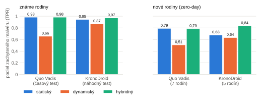
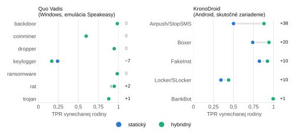
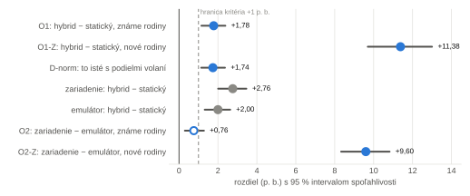
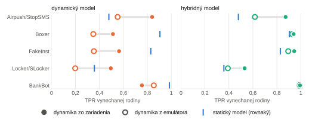

Quo Vadis (Windows) a KronoDroid (Android): popis, rozhodnutia, výsledky, porovnanie a analýza slabín
Práca skúma, či kombinácia statickej analýzy (vlastnosti súboru bez spustenia) a dynamickej analýzy (správanie pri spustení) zlepší detekciu malvéru a či ju možno usporiadať do lacnej kaskády, ktorá drahú dynamickú analýzu spustí iba pri sporných súboroch. Rovnaký postup bol použitý na dvoch verejných datasetoch.
Experimenty V1 až V3 na datasete Quo Vadis ukázali, že dynamické príznaky z emulácie neprinášajú žiadnu informáciu navyše oproti statickým príznakom. Z toho vyplýva otázka, na ktorú sa nedá odpovedať z jedného datasetu: je to vlastnosť dynamickej analýzy všeobecne, alebo vlastnosť konkrétnych dát? Na odporúčanie vedúcej práce bol preto celý postup zopakovaný na druhom datasete (verzia V4). Bol vybraný KronoDroid, pretože obsahuje dynamické záznamy tých istých aplikácií z emulátora aj zo skutočného zariadenia. Vďaka tomu možno vplyv zdroja dynamiky izolovať pri inak rovnakých podmienkach.
Dokument opisuje oba datasety rovnakou štruktúrou (čo obsahujú, výhody, obmedzenia, naše rozhodnutia, výsledky), potom ich porovnáva a nakoniec podrobne analyzuje, nakoľko je kvalita dát hlavnou slabinou práce. Všetky čísla sú prevzaté z výstupov skriptov; pri každom je uvedené, ako bolo zmerané. Rozhodnutia a kritériá boli zapísané pred spustením príslušných experimentov (docs/09, 12, 16, 19), aby sa výsledky nedali prispôsobiť dodatočne.
Pre čitateľa, ktorý sa projektom nezaoberal, sú tu vysvetlené pojmy, ktoré sa v texte opakujú.
read“).Na oboch datasetoch bol použitý rovnaký postup, aby sa výsledky dali porovnať. Rozdiely vynútené dátami sú uvedené pri jednotlivých datasetoch.
Quo Vadis (Trizna a kol., 2022) obsahuje spustiteľné súbory Windows (formát PE) v dvoch verejných častiach. Statická časť sú príznaky EMBER: 2 381 čísel na súbor (hlavička, sekcie, importované a exportované funkcie, histogramy bajtov, reťazce). Dynamická časť sú záznamy z emulátora Speakeasy, ktorý súbor nespúšťa v skutočnom Windows, ale napodobňuje jeho programové rozhranie a zaznamenáva volania funkcií. Emulácia mala limit 60 sekúnd a 500 volaní.
| vlastnosť | hodnota |
|---|---|
| použiteľné spárované súbory | 91 596 (tréning 74 703, test 17 339) |
| triedy | neškodné a 7 rodín malvéru (backdoor, coinminer, dropper, keylogger, ransomware, rat, trojan) |
| rozdelenie | časové: tréning zozbieraný v januári 2022, test v apríli 2022 |
| statické príznaky | EMBER, 2 381 príznakov (kód, importy, štruktúra súboru) |
| dynamické príznaky (naša reprezentácia) | 2 000 najčastejších jednotlivých volaní API a dvojíc volaní; pre sekvenčné modely postupnosť do 1 024 volaní |
unsupported_api) v 0,0 % tréningových, ale v 54,6 % testovacích súborov; líšia sa aj názvy chýb
(docs/04). Dynamický model sa tak učí na inak vyzerajúcich dátach, než na akých sa testuje.| rozhodnutie | dôvod |
|---|---|
| Dynamika = iba volania API (bez počtu chýb, udalostí a súhrnov emulácie) | súhrnné údaje nesú stopu inej verzie emulátora v teste; kontrolný experiment s nimi bol na teste horší (ROC-AUC 0,942 oproti 0,956) |
| Súbory s malými záznamami ponechané | sú skutočným výsledkom emulácie; vyradenie by zmenilo spoločné rozdelenie |
| Prekrývajúce sa keyloggery vyradené z tréningu, test ponechaný pôvodný | zachovanie porovnateľnosti s pôvodným testom |
| Validácia = 10 % tréningu, identické vektory spolu | prahy a výber modelov bez použitia testu |
| model (prah z validácie) | TPR časový test | FPR | TPR novej rodiny |
|---|---|---|---|
| statický LightGBM | 0,984 | 0,48 % | 0,792 |
| dynamický LightGBM | 0,657 | 1,98 % | 0,509 |
| hybridný LightGBM | 0,984 | 0,47 % | 0,787 |
| kaskáda B-baselines, rozpočet 10 % | 0,983 | 0,39 % | – |
| horná hranica „statický alebo dynamický správne“ | – | – | 0,798 |
Zdroj: docs/07 (časový test), docs/10 (nová rodina = priemer cez 7 rodín).
KronoDroid (Guerra-Manzanares, Bahsi a Nõmm, 2021) obsahuje aplikácie Android analyzované dvakrát: raz v emulátore Android a raz na skutočnom zariadení. Dataset nemá samotné aplikácie ani surové záznamy, iba hotové príznaky v tabuľkách. Statická časť sú oprávnenia, ktoré aplikácia požaduje (173 stĺpcov), a metadáta (veľkosť, počty aktivít, služieb a podobne). Dynamická časť sú počty 288 systémových volaní jadra zaznamenaných počas behu aplikácie (bez poradia).
| vlastnosť | hodnota |
|---|---|
| súbory zo zariadenia (hlavná vetva real_full) | 78 129 (tréning 54 690, validácia 7 814, test 15 625) |
| tie isté súbory v emulátore aj na zariadení (real_P, emu_P) | 63 316 |
| rodiny malvéru | 240 (na zariadení); testované nové rodiny: Airpush/StopSMS, Boxer, FakeInst, Locker/SLocker, BankBot |
| rozdelenie | náhodné 70 / 10 / 20 % so zohľadnením rodín; doplnkovo časový posun malvéru (tréning 2008–2014, test 2015–2020) |
| statické príznaky | 173 oprávnení + 11 metadát + príznak chýbajúcich metadát = 185 |
| dynamické príznaky | 288 počtov systémových volaní + ich súčet = 289 |
| rozhodnutie | dôvod |
|---|---|
| Tri vetvy: real_full (hlavná), real_P a emu_P (tie isté aplikácie, zariadenie vs. emulátor) | hlavná otázka O1 na všetkých dátach, otázka O2 na kontrolovanom páre |
| Náhodné rozdelenie, časový posun iba doplnkovo | dátumy nie sú dátumom objavenia a súvisia s triedou |
Vylúčené stĺpce VirusTotal, rodina, dátumy a FilesInsideAPK | prezrádzajú triedu alebo v emulátore chýbajú |
| Neškodné aplikácie s detekciami ponechané | rozhodnutie z princípu (označenie autorov), nie podľa výsledkov |
| Iba tabuľkové modely, bez sekvenčných | dataset neobsahuje poradie volaní |
| Kontrolný experiment D-norm | overiť, či prínos dynamiky nestojí iba na množstve aktivity |
| Statický model spoločný pre real_P a emu_P | rozdiel medzi vetvami potom spôsobuje výlučne dynamika |
Vopred boli stanovené dve otázky s kritériom „rozdiel aspoň +1 p. b. a celý 95 % interval nad nulou“: O1 – pridáva dynamika zo zariadenia informáciu nad statiku? O2 – je dynamika zo zariadenia užitočnejšia ako z emulátora? Obe aj vo variante pre nové rodiny (O1-Z, O2-Z).
| model (prah z validácie, vetva real_full) | TPR náhodný test | FPR | TPR novej rodiny | TPR časový posun |
|---|---|---|---|---|
| statický LightGBM | 0,946 | 0,62 % | 0,678 | 0,746 |
| dynamický LightGBM | 0,869 | 0,90 % | 0,635 | 0,638 |
| hybridný LightGBM | 0,972 | 0,76 % | 0,836 | 0,885 |
| kaskáda A-baselines | 0,969 | 0,40 % | 0,790 | 0,868 |
| kaskáda B-baselines, rozpočet 10 % | 0,962 | 0,38 % | 0,757 | 0,841 |
| horná hranica „statický alebo dynamický správne“ | 0,982 | 1,49 % | 0,865 | – |
Zdroj: runs_v4/comparison/v4/README.md a výpočet z uložených predikcií tým istým kódom (src/evaluation/v4_report.py); priemer cez 3 seedy a pri novej rodine aj cez 5 rodín.
| Quo Vadis | KronoDroid | |
|---|---|---|
| platforma | Windows (PE súbory) | Android (APK) |
| počet spárovaných súborov | 91 596 | 78 129 (63 316 v oboch prostrediach) |
| rodiny malvéru | 7 | 240 |
| statika | bohatá: EMBER, 2 381 príznakov vrátane importov | chudobná: oprávnenia a metadáta, 185 príznakov |
| prostredie dynamiky | emulácia API (Speakeasy), limit 500 volaní | skutočný systém: zariadenie aj emulátor Android |
| forma dynamiky | postupnosti volaní API | počty systémových volaní (bez poradia) |
| zhoda nástroja v tréningu a teste | nie (54,6 % testu končí unsupported_api) | áno (jeden zber; v dátach bez náznaku zmeny) |
| časová informácia | spoľahlivá (dva zbery: január, apríl 2022) | nespoľahlivá (dátumy súborov v APK) |
| hlavný test | časový posun 3 mesiace | náhodné rozdelenie |
| kvalita označení | bez zisteného problému | šum: 12–13 % neškodných s detekciou |
| samotné súbory (meranie času analýzy) | nie | nie |




Prečo dynamika pomáha na jednom datasete a na druhom nie? Do úvahy pripadajú štyri vysvetlenia; dáta ich umožňujú čiastočne oddeliť.
| vysvetlenie | čo ho podporuje | čo ho oslabuje |
|---|---|---|
| Kvalita zdroja dynamiky (emulácia API vs. skutočný systém) | O2-Z: na tých istých aplikáciách je dynamika zo zariadenia pri nových rodinách o 9,6 p. b. užitočnejšia; dynamický model zo zariadenia je lepší v 4 z 5 rodín | pri známych rodinách iba +0,8 p. b.; aj emulátor Android je skutočný systém, takže rozdiel oproti Speakeasy je väčší ako rozdiel emulátor vs. zariadenie |
| Sila statiky (EMBER je bohatý, oprávnenia chudobné) | statický model na KronoDroid zachytí novú rodinu iba v 68 %, takže ostáva priestor; na Quo Vadis je statika takmer dokonalá pri známych rodinách | na Quo Vadis pri nových rodinách statika tiež zlyhávala (79 %), a predsa horná hranica kombinácie pridala iba 0,6 p. b.; O2 sa meria pri rovnakej statike |
| Nezhoda nástroja medzi tréningom a testom (Quo Vadis) | 54,6 % testu s unsupported_api; dynamický model na teste prudko slabne (ROC-AUC 0,997 → 0,956) |
dynamika nepomáha ani na súboroch s úspešnou emuláciou (docs/17) |
| Platforma a typ príznakov (Windows API vs. systémové volania Android) | nedá sa vylúčiť | nedá sa oddeliť jedným porovnaním; na to by bol potrebný tretí dataset |
Najlepšie podložený výklad: na Quo Vadis dynamika z emulácie nenesie užitočnú informáciu o správaní, kým na KronoDroid áno. Kvalita prostredia dynamickej analýzy je jednou z príčin, ktorú sa podarilo zmerať priamo (O2-Z). Spolu s ňou pôsobí aj sila statiky a platforma. Ich podiel sa nedá presne rozdeliť.
Domnienka znie: najväčšou slabinou práce je, že nemáme kvalitný a veľký dataset so statickými aj dynamickými dátami. Táto kapitola ju posudzuje systematicky: najprv definuje, aký dataset by výskumná otázka potrebovala, potom porovná, čo z toho spĺňajú použité datasety, a nakoniec posúdi, či sú iné slabiny práce závažnejšie.
Na spoľahlivé posúdenie hybridnej detekcie a kaskády by mal dataset spĺňať tieto požiadavky:
| požiadavka | prečo | Quo Vadis | KronoDroid |
|---|---|---|---|
| P1 statika aj dynamika pre tie isté súbory | bez párovania nemožno hybrid ani kaskádu | áno | áno |
| P2 bohatá statika (aj z kódu) | porovnanie so silným statickým modelom, ako v praxi | áno | nie |
| P3 dynamika zo skutočného prostredia s dostatočným behom | inak dynamika nevidí skutočné správanie | nie | áno |
| P4 rovnaký nástroj a nastavenie v tréningu aj teste | inak model meria zmenu nástroja, nie správania | nie | áno |
| P5 bohatá dynamika (postupnosti, udalosti) | súhrnné počty strácajú poradie správania | čiastočne | nie |
| P6 spoľahlivý dátum objavenia | realistický časový test | áno | nie |
| P7 veľa rodín s dostatkom vzoriek | test nových rodín | 7 rodín | 240 rodín |
| P8 čisté označenia | šum skresľuje FPR | bez zisteného problému | šum 12–13 % |
| P9 dostupné súbory alebo časy analýzy | meranie skutočných nákladov kaskády | nie | nie |
| P10 veľkosť (desaťtisíce a viac) | stabilné odhady pri FPR 1 % | 92 tis. | 78 tis. |
Ani jeden dataset nespĺňa všetky požiadavky. Quo Vadis má silnú statiku a dobrý časový test, ale slabú dynamiku (P3, P4). KronoDroid má kvalitnejšiu dynamiku, ale slabú statiku a nespoľahlivé dátumy (P2, P6). Žiadny z nich neumožňuje zmerať čas dynamickej analýzy (P9). Datasety sa navzájom dopĺňajú: v čom je jeden slabý, je druhý silný.
Prečo je opodstatnená. Hlavný záver o prínose dynamiky sa medzi datasetmi obracia: na Quo Vadis je nulový, na KronoDroid veľký (pri nových rodinách +11 p. b.). Výsledok práce teda priamo závisí od toho, aké dáta sú k dispozícii. To je typická hrozba vonkajšej platnosti (zovšeobecniteľnosti): z jedného datasetu by sa dal vyvodiť opačný záver ako z druhého. Pri Quo Vadis je navyše dynamika poškodená zmenou nástroja medzi tréningom a testom, takže záver „dynamika nepomáha“ sa nedá oddeliť od kvality zberu.
Spresnenie 1 – nejde o veľkosť, ale o kvalitu a úplnosť. Oba datasety sú dostatočne veľké (desaťtisíce súborov; intervaly spoľahlivosti sú úzke, typicky ±0,6 p. b.). Chýba dataset, ktorý by spájal bohatú statiku, dynamiku zo skutočného prostredia, spoľahlivý časový test a meranie nákladov analýzy (P2 + P3 + P4 + P6 + P9).
Spresnenie 2 – práca slabinu čiastočne zmierňuje. Použitím dvoch datasetov s opačnými vlastnosťami a kontrolovaného porovnania zariadenie–emulátor sa závislosť od dát stala zisteniami, nie iba obmedzeniami: (a) prínos dynamiky je podmienený kvalitou dynamických dát, (b) kvalita prostredia rozhoduje najmä pri nových rodinách, (c) prínos kaskády vo falošných poplachoch je stabilný na oboch datasetoch.
Aby bolo posúdenie úplné, treba dataset porovnať s ďalšími slabinami. Zoradené podľa závažnosti:
| # | slabina | čoho sa týka | závažnosť | dá sa zmierniť? |
|---|---|---|---|---|
| 1 | Kvalita a úplnosť dát (kap. 7.1) | téza 1, otázky o prínose dynamiky | vysoká | čiastočne – dva datasety, kontrolované O2 |
| 2 | Čas dynamickej analýzy nie je merateľný (P9) | téza 4 (úspora nákladov) | vysoká | čiastočne – úspora sa vyjadruje podielom analyzovaných súborov (10–22 %), nie sekundami |
| 3 | Rozdielny typ testu (časový vs. náhodný) | porovnanie datasetov | stredná | áno – na KronoDroid doplnkový časový posun so zhodným smerom (+5,4 p. b.) |
| 4 | Laboratórne podmienky, bez nasadenia | praktická použiteľnosť | stredná | nie – je to vymedzenie práce |
| 5 | Destilácia nepriniesla zlepšenie | téza 3 | stredná | čiastočne – výsledok je konzistentný na dvoch datasetoch a vysvetlený |
| 6 | Analýza príčin V3 vychádzala z testu V2 | nezávislosť V3 | nízka | áno – kritériá vopred, V4 je nezávislé overenie |
Kvalita dát je teda najzávažnejšou slabinou, s ktorou úzko súvisí druhá: chýbajúce surové súbory neumožňujú zmerať čas dynamickej analýzy. Kaskáda šetrí práve tento čas, takže jej hlavnú výhodu možno vyjadriť iba nepriamo.
| téza (kritériá docs/09) | Quo Vadis (V1–V3) | KronoDroid (V4, real_full) | spoločný záver |
|---|---|---|---|
| 1. Kaskáda zachytí viac novej rodiny (≥ +1 p. b.) pri FPR nanajvýš ako statický model | nepotvrdená: kaskády 0,73–0,78 oproti 0,79 statického | potvrdená: A-baselines 0,790 oproti 0,678 pri nižšom FPR; platí pre 12 z 13 kaskád | závisí od kvality dynamiky |
| 2. Menej falošných poplachov ako statický aj dynamický model pri TPR v tolerancii 1 p. b. | potvrdená pre kaskády z LightGBM (FPR o ~20–25 % nižšie) | potvrdená pre 10 z 13 kaskád; z LightGBM FPR 0,38–0,42 % oproti 0,62 % a TPR vyššie | platí na oboch |
| 3. Destilovaný študent rovnako presný ako komplexný hybrid (±1 p. b.) a rýchlejší | čiastočne: statický študent s dvojvetvovou sieťou ako učiteľom | nepotvrdená: študenti o 8–34 p. b. horší, hoci 2–8× rýchlejší | neplatí všeobecne |
| 4. Kaskáda zníži potrebu dynamickej analýzy pri splnení tézy 2 | potvrdená: 21,5 % súborov | potvrdená: 10,3 % súborov | platí na oboch |
Kaskády „z LightGBM“ (baselines) používajú v prvom stupni priamo vybrané modely LightGBM, nie destilovaných študentov. Na KronoDroid platí téza 2 aj na vetvách real_P a emu_P pre všetky kaskády z LightGBM; kaskády so študentmi ju pri emulátore nesplnia, lebo dynamický študent z emulátora je slabý.
Rovnaký experimentálny postup na dvoch verejných datasetoch viedol k rozdielnym záverom o prínose dynamickej analýzy. Na Quo Vadis, kde dynamika pochádza z emulácie rozhrania Windows a v testovacom období bola zaznamenaná pravdepodobne inou verziou nástroja, dynamické príznaky detekciu nezlepšili ani pri nových rodinách. Na KronoDroid, kde dynamika pochádza zo skutočného systému Android, hybridný model zachytil o 1,8 p. b. viac malvéru pri známych rodinách, o 11,4 p. b. viac pri nových rodinách a o 5,4 p. b. viac pri časovom posune, a to pri rovnakom počte falošných poplachov. Kontrolované porovnanie tých istých aplikácií ukázalo, že prostredie dynamickej analýzy rozhoduje najmä pri nových rodinách (+9,6 p. b. v prospech zariadenia), kým pri známych rodinách je jeho vplyv malý.
Niektoré výsledky platia nezávisle od datasetu: kaskáda zostavená z modelov LightGBM znižuje počet falošných poplachov a dynamickú analýzu potrebuje iba pri 10–22 % súborov. Destilácia do malých neurónových sietí priniesla rýchlejšie modely, no na KronoDroid za cenu výrazne nižšej presnosti ako komplexný hybrid; študent bez učiteľa bol pritom rovnako dobrý ako s učiteľom, takže obmedzením je kapacita malej siete, nie destilácia.
Domnienka, že najväčšou slabinou práce je chýbajúci kvalitný dataset so statickými aj dynamickými dátami, je opodstatnená. Spresnenie: problémom nie je veľkosť, ale to, že žiadny dostupný dataset nespája bohatú statiku, dynamiku zo skutočného prostredia, spoľahlivý časový test a možnosť zmerať čas analýzy. Práca túto slabinu nezakrýva, ale meria ju. Dva datasety s opačnými vlastnosťami a kontrolované porovnanie emulátora so zariadením z nej robia samostatné zistenie: prínos dynamickej analýzy v hybridnej detekcii je podmienený kvalitou dynamických dát.
Quo Vadis: docs/07 (V1, časový test), docs/10 (V2, nové rodiny, horná hranica), docs/13 (V3, špecialista), docs/17 (robustnosť, súbory s úspešnou emuláciou), docs/01 a 04 (audit dát). KronoDroid: docs/18 (audit), docs/19 (plán a kritériá, zapísané 22. 11. 2026 pred tréningom), docs/20 a runs_v4/comparison/v4/README.md (výsledky), runs_v4/real_full/full/comparison/complementarity a hybrid/IMPORTANCE.md. Grafy: docs/21_zdroj/make_figures.py. Datasety: Trizna a kol., Quo Vadis: Hybrid Machine Learning Meta-Model Based on Contextual and Behavioral Malware Representations (AISec 2022); Guerra-Manzanares, Bahsi, Nõmm, KronoDroid: Time-based Hybrid-featured Dataset for Effective Android Malware Detection and Characterization, Computers & Security 110 (2021) 102399.